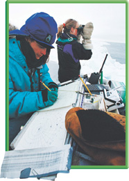

Science as a Way of Knowing science is an organized way of gathering and analyzing evidence about the natural world. It is a way of observing, a way of thinking, and “a way of knowing” about the world. In other words, science is a process, not a “thing.” The word science also refers to the body of knowledge that scientific studies have gathered over the years.
Several features make science different from other human endeavors. First, science deals only with the natural world. Scientific endeavors never concern, in any way, supernatural phenomena of any kind. Second, scientists collect and organize information in an orderly way, looking for patterns and connections among events. Third, scientists propose explanations that are based on evidence, not belief. Then they test those explanations with more evidence.
The Goals of Science The scientific way of knowing includes the view that the physical universe is a system composed of parts and processes that interact. From a scientific perspective, all objects in the universe, and all interactions among those objects, are governed by universal natural laws. The same natural laws apply whether the objects or events are large or small.
Aristotle and other Greek philosophers were among the first to try to view the universe in this way. They aimed to explain the world around them in terms of events and processes they could observe. Modern scientists continue that tradition. One goal of science is to provide natural explanations for events in the natural world. Science also aims to use those explanations to understand patterns in nature and to make useful predictions about natural events.
Science, Change, and Uncertainty Over the centuries, scientists have gathered an enormous amount of information about the natural world. Scientific knowledge helps us cure diseases, place satellites in orbit, and send instantaneous electronic communications. Yet, despite all we know, much of nature remains a mystery. It is a mystery because science never stands still; almost every major scientific discovery raises more questions than it answers. Often, research yields surprises that point future studies in new and unexpected directions. This constant change doesn’t mean science has failed. On the contrary, it shows that science continues to advance.
That's why learning about science means more than just understanding what we know. It also means understanding what we don’t know. You may be surprised to hear this, but science rarely “proves” anything in absolute terms. Scientists aim for the best understanding of the natural world that current methods can reveal. Uncertainty is part of the scientific process and part of what makes science exciting! Happily, as you’ll learn in later chapters, science has allowed us to build enough understanding to make useful predictions about the natural world.
FIGURE 1–2 Science in Action These marine scientists are recording information as they study whales in Alaska.